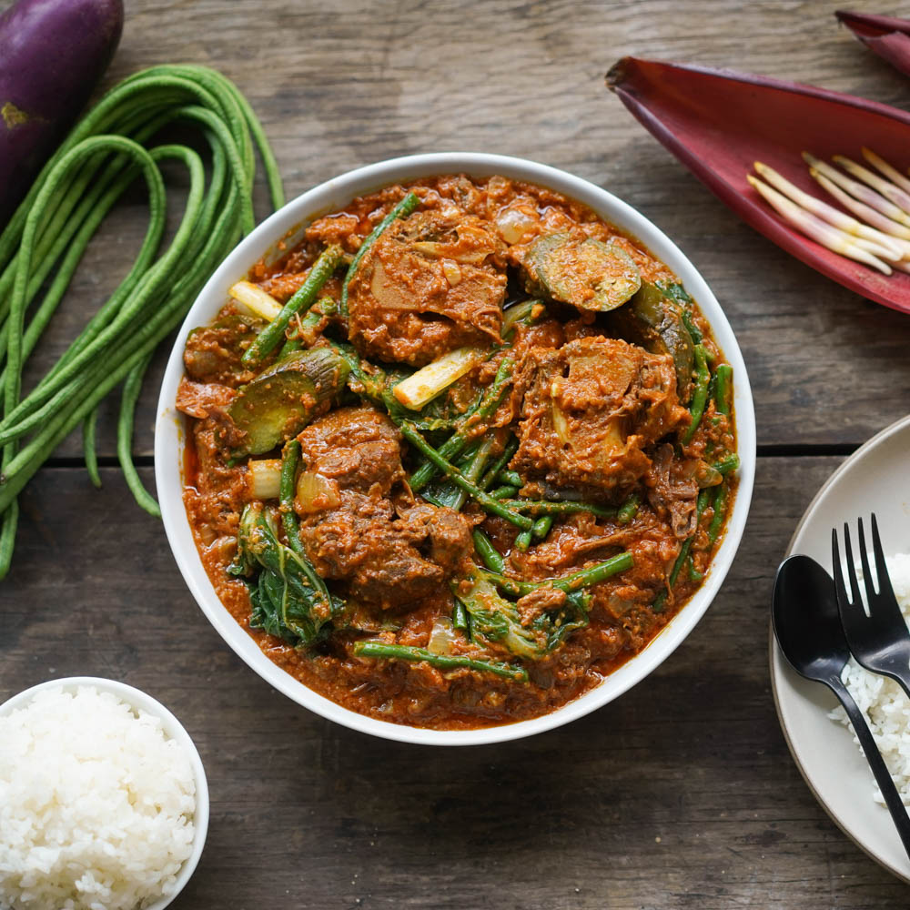
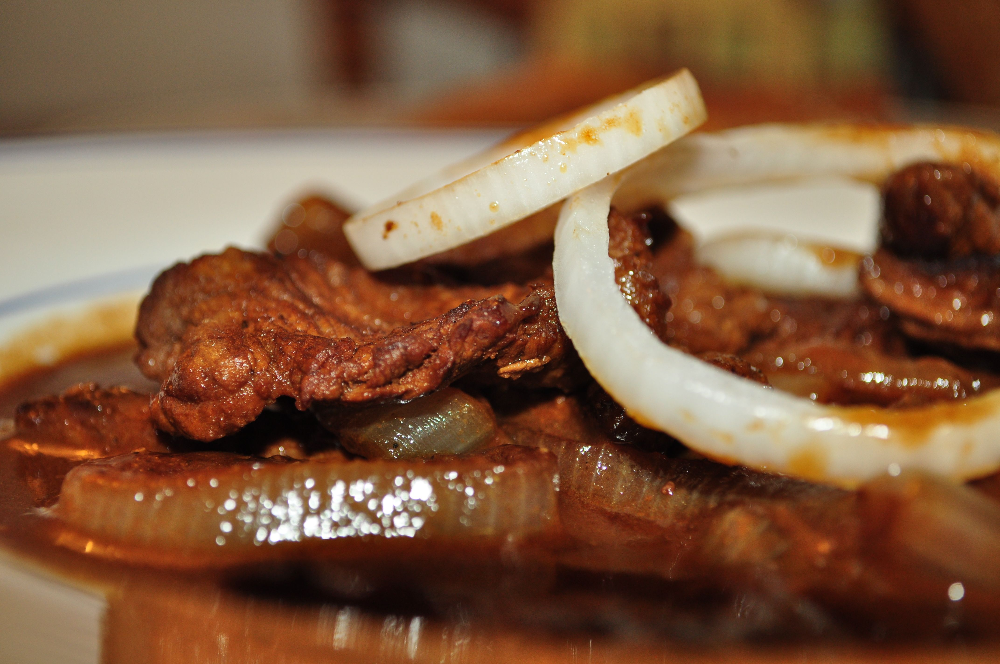
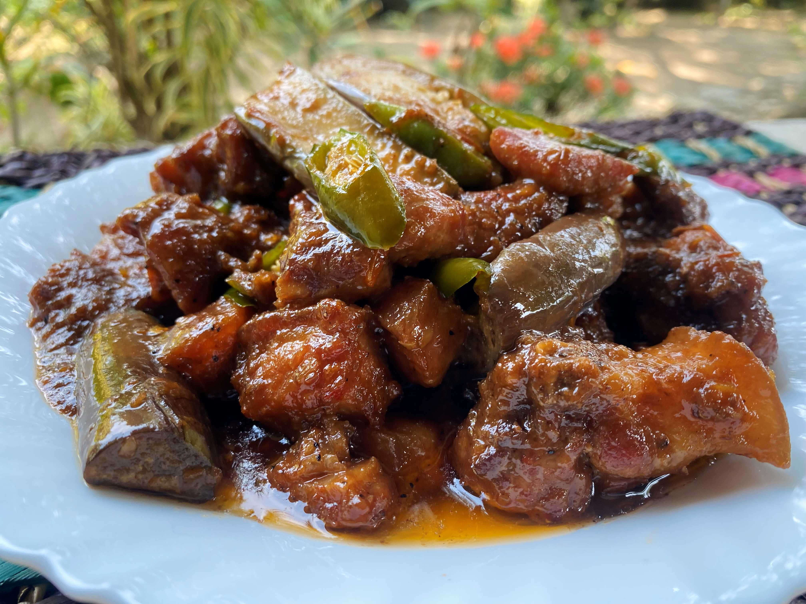

Adobo

Ingredients
- 1 lb chicken or pork (or a mix)
- 1/4 cup soy sauce
- 1/4 cup vinegar
- 5 cloves garlic, crushed
- 3 bay leaves
- 1 tsp whole black peppercorns
- 1/2 cup water
- Optional: 1 tbsp sugar, hard-boiled eggs, or potatoes
Instructions
- Marinate meat in soy sauce and garlic for 30 minutes.
- In a pot, add marinated meat, vinegar, bay leaves, peppercorns, and water.
- Bring to a boil, then simmer for 30-45 minutes, until meat is tender and sauce thickens.
- Optional: Add sugar, eggs, or potatoes.
- Serve hot with rice. Enjoy!
Lechon

Ingredients
- 3-5 lbs pork belly (with skin)
- 1 stalk lemongrass, bruised and tied
- 5 cloves garlic, crushed
- 1 onion, sliced
- Salt and pepper to taste
- 2 tbsp soy sauce
- 2 tbsp vinegar
- Water for basting
Instructions
- Preheat oven to 350°F (180°C).
- Rub pork with salt, pepper, soy sauce, and vinegar. Place garlic, onion, and lemongrass in the center, then roll and tie tightly.
- Place pork in a roasting pan and roast for 2-3 hours, basting occasionally with water.
- Increase temperature to 450°F (230°C) in the last 15-20 minutes to crisp the skin.
- Rest, slice, and serve with lechon sauce or vinegar dip.
Kare-Kare

Ingredients
- 1 lb oxtail (or beef shank/tripe), cut into pieces
- 2 tbsp annatto powder (for color)
- 1/4 cup peanut butter
- 1 onion, chopped
- 4 cloves garlic, minced
- 1 banana blossom, sliced
- 1 small eggplant, sliced
- 1 bunch bok choy
- 1 cup green beans, cut into pieces
- Salt and pepper to taste
- 4 cups water or beef broth
- Shrimp paste (bagoong), for serving
Instructions
- Boil oxtail (or beef) in water or broth until tender. Set aside meat and reserve broth.
- Sauté garlic and onion, then add annatto powder, peanut butter, and broth. Stir until well combined.
- Add the meat back in, then add eggplant, banana blossom, and green beans. Simmer until vegetables are tender.
- Add bok choy, season with salt and pepper, and simmer briefly.
- Serve with shrimp paste on the side.
Bistek Tagalog

Ingredients
- 1 lb beef sirloin, thinly sliced
- 1/4 cup soy sauce
- 1/4 cup calamansi or lemon juice
- 1 onion, sliced into rings
- 3 cloves garlic, minced
- 1/4 cup cooking oil
- Salt and pepper to taste
Instructions
- Marinate beef in soy sauce, calamansi juice, garlic, salt, and pepper for 30 minutes.
- Heat oil in a pan, sauté onions until soft, then set aside.
- In the same pan, cook marinated beef until browned and tender.
- Add back the onions, stir, and simmer for a few more minutes.
- Serve with steamed rice.
Laing

Ingredients
- 1 lb dried taro leaves
- 1 can (400 ml) coconut milk
- 1/2 cup shrimp paste (bagoong)
- 1 onion, chopped
- 3 cloves garlic, minced
- 2-3 Thai chili peppers, chopped (optional)
- 1/4 cup water
Instructions
- Sauté garlic, onion, and chili in a pan until fragrant.
- Add shrimp paste and cook for a few minutes.
- Add coconut milk and water, bringing it to a simmer.
- Add dried taro leaves and cook until tender, stirring occasionally.
- Simmer until the sauce thickens and the leaves are fully cooked. Serve with rice.
Inihaw na Liempo

Ingredients
- 2 lbs pork belly (liempo), sliced into thick strips
- 1/4 cup soy sauce
- 1/4 cup calamansi or lemon juice
- 3 cloves garlic, minced
- 1 onion, chopped
- 1 tsp ground black pepper
- 1 tbsp brown sugar
- 1/4 cup oil
Instructions
- Marinate pork in soy sauce, calamansi juice, garlic, onion, black pepper, and brown sugar for at least 30 minutes.
- Preheat grill or barbecue.
- Grill the marinated pork over medium heat, basting with oil and turning occasionally, until crispy and cooked through (about 20-30 minutes).
- Serve with rice and dipping sauce (suka or vinegar).
Chicken Inasal
Ingredients
- 2 lbs chicken (cut into parts)
- 1/4 cup soy sauce
- 1/4 cup vinegar
- 1/4 cup calamansi or lemon juice
- 1 tbsp brown sugar
- 1 head garlic, minced
- 1 thumb-sized ginger, minced
- 1 stalk lemongrass, smashed (optional)
- 1/4 cup oil
- Salt and pepper to taste
Instructions
- Marinate chicken in soy sauce, vinegar, calamansi, garlic, ginger, lemongrass, sugar, salt, and pepper for at least 2 hours.
- Preheat grill or barbecue.
- Grill chicken, basting with oil and marinade, until golden and cooked through, about 20-30 minutes, turning occasionally.
- Serve with rice and dipping sauce.
Caldereta
Ingredients
- 1 lb beef (shank or stew meat), cut into cubes
- 2 tbsp oil
- 1 onion, chopped
- 3 cloves garlic, minced
- 1 carrot, sliced
- 1 potato, peeled and sliced
- 1/4 cup tomato paste
- 1 cup beef broth
- 1/2 cup bell pepper, sliced
- 1/2 cup green peas
- 1/4 cup liver spread (optional)
- 1/4 cup olives (optional)
- Salt and pepper to taste
Instructions
- Heat oil and sauté garlic and onion until softened. Add beef and cook until browned.
- Stir in tomato paste, then add beef broth. Simmer until beef is tender (about 1-2 hours).
- Add carrots, potatoes, bell pepper, and green peas. Cook until vegetables are tender.
- Stir in liver spread and olives (optional), season with salt and pepper.
- Serve with steamed rice.
Afritada

Ingredients
- 1 lb chicken (cut into parts)
- 2 tbsp oil
- 1 onion, chopped
- 3 cloves garlic, minced
- 1 carrot, sliced
- 1 potato, peeled and cubed
- 1/2 cup bell peppers, sliced
- 1/4 cup tomato paste
- 1 cup tomato sauce
- 1/2 cup peas
- 1/2 cup chicken broth or water
- Salt and pepper to taste
Instructions
- Heat oil and sauté garlic and onion until softened. Add chicken and cook until browned.
- Stir in tomato paste, then add tomato sauce and chicken broth. Simmer for 20 minutes.
- Add carrots, potatoes, and bell peppers. Cook until vegetables are tender.
- Add peas and season with salt and pepper. Simmer for a few more minutes.
- Serve with steamed rice.
Pinakbet

Ingredients
- 1 lb pork belly, sliced
- 1/2 cup shrimp paste (bagoong)
- 1 onion, chopped
- 3 cloves garlic, minced
- 1 medium eggplant, sliced
- 1 bitter melon (ampalaya), sliced
- 1 cup string beans, cut into pieces
- 1 small squash, peeled and cubed
- 1/2 cup water
- Salt and pepper to taste
Instructions
- Sauté garlic and onion in oil until softened. Add pork belly and cook until browned.
- Stir in shrimp paste and cook for a few minutes.
- Add the squash, bitter melon, eggplant, and string beans.
- Pour in water, cover, and simmer until vegetables are tender.
- Season with salt and pepper, then serve with rice.
Pork Binagoongan

Ingredients
- 1 lb pork belly, cut into cubes
- 2 tbsp shrimp paste (bagoong)
- 1 onion, chopped
- 3 cloves garlic, minced
- 1/2 cup tomato, chopped
- 1/4 cup vinegar
- 1/4 cup water
- 1-2 Thai chili peppers, chopped (optional)
- 1/2 cup eggplant, sliced (optional)
- Salt and pepper to taste
Instructions
- Sauté garlic and onion until softened, then add pork and cook until browned.
- Stir in shrimp paste and cook for 2-3 minutes.
- Add tomato, vinegar, and water, then simmer until pork is tender and sauce thickens.
- Add eggplant (if using) and chili peppers, cook until tender.
- Season with salt and pepper, then serve with rice.